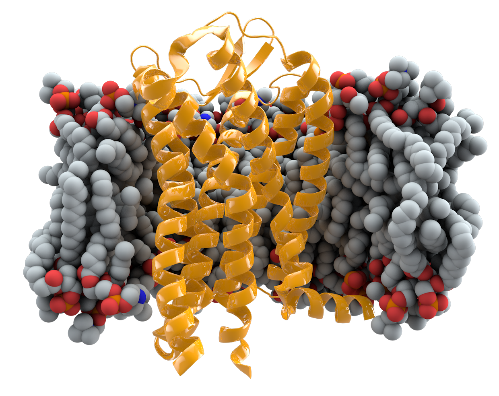
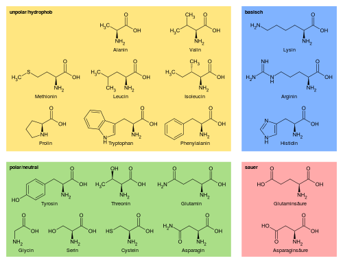
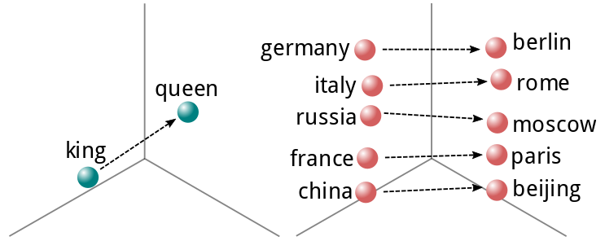
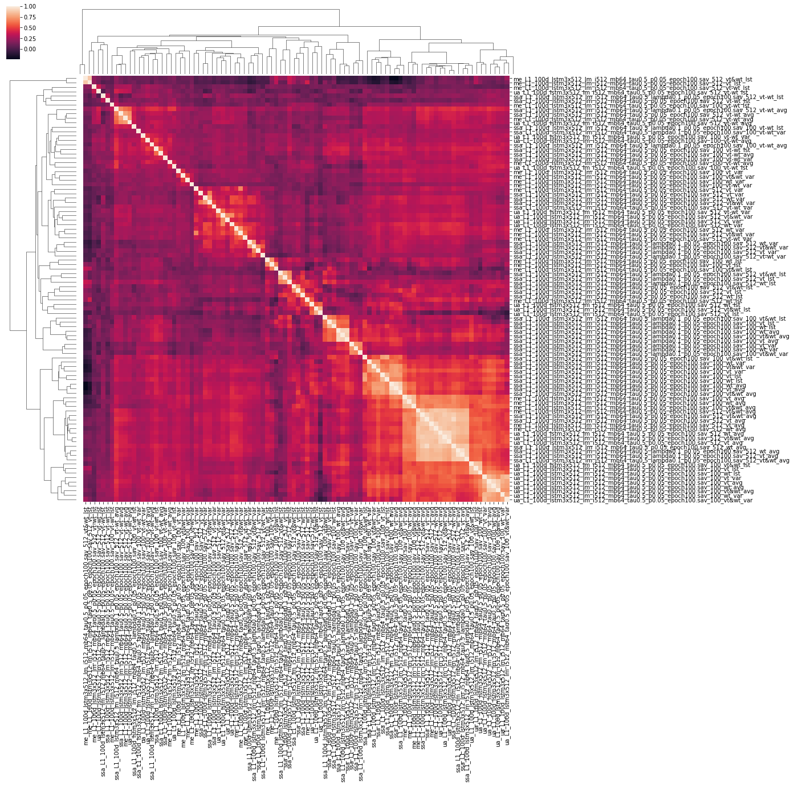

Index
Introduction
In bioinformatics, we often encounter situations where empirical data on some biological phenomenon is available and we would like to predict whether this also occurs in other cases. Many times, we find that interactions between variables are complex and not directly correlated to what is being studied. In those cases we can use machine learning to make these predictions for us. What if, instead of just using straightforward tabular or image data, we could also use protein sequence data in solving these problems?
If you're already comfortable with the advantages of using protein sequences and the theory behind it, click here. If not, read on!
Use cases
Transmembrane prediction
The technique being presented has been used to achieve state of the art results on transmembrane prediction tasks[7]. In this task a classifier is required to predict the exact type of transmembrane protein based on a sequence. Bepler et al. used this technique to demonstrate the transferability of protein sequence embeddings to new tasks.
Protein similarity prediction
A large amount of proteins have been sequenced, but only a tiny minority have analyzed structurally. It is difficult to predict how similar two proteins are based only on their sequence, as a given structure can be achieved by a wide variety of different sequences.
Thermostability prediction

Proteins rely on their structure to function. These structures are sensitive to temperature, and will lose integrity when the temperature is too high. This process is called denaturation. Variants in a protein can cause that threshold temperature to change. Protein sequence embeddings can be valuable in predicting which variants will cause the protein to become more thermostable.
Problem description
There are many different algorithms that can be used to perform machine learning, from the simplest linear models to complex neural networks. Most of these methods, however, have difficulty dealing with sequence data for the following reasons:
- Sequences can vary in length.
- In sequences, relative position matters, absolute position not so much.
- Sequences are symbolic, not real-valued.
- Sequences are not amenable to resizing in the way that images are.
- Biological data is often sparse, which makes overfitting to highly dimensional data likely.
A naive way in which one would integrate protein sequences into, for example, a Random Forest, would be to pad the sequence to the length of the longest protein, convert the symbols to a list of one-hot-vectors and creating a very large sparse matrix that way. This immediately leads to a set of problems:
- You are automatically limited to the length of the longest sequence in your training set.
- Even when working with short sequences (< 250 amino acids) this method will quickly result in 5250 features per sample. (250 × 21, as there are 20 different amino acids and one padding value), way too many variables for smaller datasets.
- If a sequence is observed with a simple insertion in the middle of the sequence, it will throw off the algorithm, as feature influence is dependent on absolute position, not relative position.
This approach will thus lead to overfitting at best, or a lack of fitting at all in the worst case scenario. A better way is needed to incorporate sequence data into machine learning algorithms.
Theory
Sequences
Sequences can generally be defined as a collection of objects in a certain order where repetition is allowed. They occur in many different shapes and sizes. A single number can be regarded as a sequence containing one number, and the entire works of Shakespeare can be seen as a long sequence of words (or characters). In Python sequences are often represented in strings, lists or numpy arrays. Sets are generally not used, as repetition is excluded by definition.
Protein sequences are sequences of symbols, generally 20 different characters representing the 20 used amino acids used in human proteins. Proteins sequences can range from the very short (20 amino acids in total[1]) to the very long (38 183 amino acids for Titin[2]). The average human protein comes in at around 375 amino acids[3].
There are several ways in which sequences can be represented for use in machine learning purposes.
- Padded, with the different symbols as categoricals. This is the easiest representation to deliver, but it is rarely supported natively by more basic algorithms. More advanced algorithms like CatBoost do have support for categorical features.
- Padded, but with the symbols replaced by some integer. While easy to generate, this approach is not very effective in a machine learning context, as the relationship between different amino acids is not linear and cannot be described in a single dimension.
- Padded and converted into one-hot vectors. This yields a matrix which can be consumed by most machine learning algorithms, but due to 20+ times increase in feature count this approach quickly becomes untenable for proteins longer than a few residues.
- An alternative, real valued representation with a fixed dimensionality, describing the sequence in its entirety.
The final option is what will be discussed in this article. There are ways to generate such a description using heuristics and statistics on the sequence (GC content, total hydrophobicity, mean charge, etcetera), but here we will look at machine generated representations, also known as embeddings.
Embeddings
Neural networks have always had to contend with the issue of representation. Given that they consist of a pile of linear algebra[4] only numbers can be inserted into the mix, with categorical data generally being reduced to a one-hot encoding in order for the network to accept it. However, this approach generally does not yield great results when the vocabulary is very large, as the number of features quickly gets out of hand. This was the case in natural language processing. Hence, neural networks were first used in 2003 by Bengio et al. [5] to produce distributed representations of words.
This concept was later expanded upon by a team of researchers at Google, who produced Word2Vec (https://papers.nips.cc/paper/5021-distributed-representations-of-words-and-phrases-and-their-compositionality), a fast generator of word vectors, which are real valued representations of words that describe their meaning in N-dimensional space. One can even perform algebraic operations on these representations to derive the meaning from different words. This is exemplified by the now-famous “king - man = queen” expression.
When working with sentences or even paragraphs, one can use any of a number of techniques to reduce a sequence of these vectors to a fixed number of dimensions. These include averaging, summing or performing more advanced dimensionality reduction techniques. We will get into those later in this post.
Transfer learning
Another problem that is often encountered in biological datasets, is their size. While the data may be detailed, there may only be a few thousand samples, as data gathering is an expensive endeavor. Any representation of a sequence tends to be high-dimensional, which can result in overfitting to the training set if proper precautions are not taken. It therefore makes sense not to start learning from the sequence directly, but instead find a representation that already has meaning attached to it. This approach imbues your model with information from outside your dataset, even for new samples. This is called transfer learning.
Transfer learning is widely used in image classification and natural language processing. Image classifiers are often fine-tuned models, initially trained on large datasets with millions of pictures like ImageNet. Language models will be pre-trained on large corpuses of text with billions of words. This leads to more efficient training and less overfitting on smaller, targeted datasets. The same can be done for protein sequences, using transfer learning from a larger project to aid your smaller dataset.
Solution
One solution to the protein sequence embedding problem comes in the form of a paper from Bepler and Berger released in 2018 and published at the 2019 ICLR. (https://openreview.net/forum?id=SygLehCqtm). The authors produced a set of recurrent neural networks trained on generic protein prediction tasks, like secondary structure prediction, contact map prediction and transmembrane prediction. The intermediate representations of those pre-trained networks can be used to annotate your dataset and enhance your predictor’s performance.
Instructions
This tutorial assumes some prior knowledge of Python programming and machine learning. This is not a beginner’s tutorial. There are excellent resources available online to teach you this stuff, for example on https://reddit.com/r/learnmachinelearning .
1: Clone GitHub Repo & Download models
First, use Git to clone the repository from the authors, it is located on Github. While you’re there, leave a star if you want to show your appreciation! ★
Second, download the pretrained models, the link is listed in the repository README. Untar this package to find the PyTorch models saved in binary form.
import os
import sys
import pandas as pd
import numpy as np
import requests
from pprint import pprint
from sklearn.neural_network import MLPRegressor
from sklearn.model_selection import train_test_split, KFold, \
GroupKFold
from scipy.stats import pearsonr, mode
import matplotlib.pyplot as plt
import seaborn as sns
# Import data from protein sequence embedding repository.
sys.path.append("/home/stephan/protein-sequence-embedding-iclr2019")
from src.alphabets import Uniprot21
from torch.nn.utils.rnn import PackedSequence
from src.utils import pack_sequences, unpack_sequences
import torch
%matplotlib inline2: Baseline example for comparison
The FireProt Protein Thermostability database will be used in order to demonstrate the use of these sequence embeddings. Thermostability predictions are a rather difficult affair, but maybe some sequence embeddings can help.
Start by loading the data from the CSV into a pandas dataframe and retrieving the corresponding sequences. Because the PDB identifiers are given, we can use the RCSB website to retrieve the relevant sequences.
# Load stability data from FireProtDB
stability_data = pd.read_csv(
"https://loschmidt.chemi.muni.cz/fireprotdb/data.csv"
)
stability_data.head()
def download_pdb_sequence(pdb_id):
""" Download the sequence for a given structure from RCSB. """
url = "https://www.rcsb.org/pdb/download/downloadFastaFiles.do?structureIdList={}&compressionType=uncompressed".format(pdb_id)
data = requests.get(url).content.decode('utf8')
sequence = "".join(data.split("\n")[1:])
return sequence
# Annotate stability data
for pdb_id in stability_data.protein.str.upper().unique():
sequence = download_pdb_sequence(pdb_id)
stability_data.loc[
stability_data.protein.str.upper() == pdb_id, "sequence"
] = sequence
stability_data.head()The sequences are, of course, in their wildtype form. This is valuable, but every proposed variant will yield different results. Thus, we also want to generate an embedding for the mutated protein sequence. Some of the positions for a mutation in the source file are outdated, so we can try to find a good offset for each sequence using a little bit of code. This uses the offset that occus most.
def find_offset(row):
resnum = int(row.mutation[1:-1])
wt = row.mutation[0]
seq = row.sequence
if seq[resnum - 1] == wt:
return 0
for offset in range(1, 7):
if seq[resnum - 1 - offset] == wt:
return offset * -1
if seq[resnum - 1 + offset] == wt:
return offset
return None
stability_data.loc[:, "offset"] = stability_data.apply(
find_offset, axis=1
)
offsets = stability_data.loc[:, ["protein", "offset"]].groupby(
"protein"
).apply(lambda x: mode(x, axis=None)[0][0])
def mutate_sequence(row):
pos = int(row.mutation[1:-1]) + int(offsets[row.protein]) - 1
assert pos < len(row.sequence)
new_sequence = row.sequence[:pos]
new_sequence += row.mutation[-1]
new_sequence += row.sequence[pos + 1:]
assert new_sequence[pos] == row.mutation[-1]
assert len(new_sequence) == len(row.sequence)
return new_sequence
stability_data.loc[:, "sequence_mut"] = stability_data.apply(
mutate_sequence, axis=1
)For this example, I will evaluate the performance based on the Pearson correlation, with a very simple model with minimal features as a base: The base model is a Multilayer Perceptron with 50 neurons and 3 features: Secondary structure, wildtype and varianttype. In 10 fold cross validation, this classifier performs as a baseline, with a ~0.25 Pearson R score.
# Add simple features
stability_data.loc[:, "wildtype"] = \
stability_data.mutation.apply(lambda m: m[0])
stability_data.loc[:, "varianttype"] = \
stability_data.mutation.apply(lambda m: m[-1])
stability_data.head()
prediction_cols = ['struc', 'wildtype', 'varianttype']
# Convert categorical variables into simple One-hot encoding
X = pd.get_dummies(stability_data.loc[:, prediction_cols])
# ddG or ΔΔG is the target variable in this case
y = stability_data.ddG
predictions, truths = [], []
groups = stability_data.protein
for seed in [0, 1, 2]:
for train_index, test_index in GroupKFold(10).split(X, y, groups):
X_train, X_test, y_train, y_test = X.iloc[train_index], X.iloc[test_index], y.iloc[train_index], y.iloc[test_index]
reg = MLPRegressor(50, random_state=seed, max_iter=200)
reg.fit(X_train, y_train)
predictions += reg.predict(X_test).tolist()
truths += y_test.tolist()
print("Test correlation: ", pearsonr(truths, predictions)[0])
A special case of 10 fold cross validation is used, where the training sets contain only proteins that are not present in the test sets. This helps in ensuring that thermostability features are learning, instead of the distribution of the protein. Note that this is a difficult problem, especially with a small dataset! It is also the best way to avoid fooling oneself when evaluating the improvements gained from adding these features.
3: Adding vectors
Using the pretrained models we can generate vectors that describe each sequence. The models in question are created in PyTorch, which means we need to prepare the input data in a PyTorch format and move the results back to numpy. On the upside, we are able to the GPU to speed up these operations. An example sequence-to-embedding conversion is listed here:
model_dir = "/home/sheijl/pretrained_sequence_models/"
u21 = Uniprot21()
def embed_sequences(sequences, lm_embed, positions, offsets):
""" Embed sequences
:param sequences: An iterable containing uppercase sequences strings.
:param lm_embed: A pytorch embedding model that accepts encodeded
and produces matrices of size <seqlen>×<vecsize>.
:param sequences: An iterable containing the position of each variant.
:param sequences: An iterable with position offsets for each variant.
:returns: A dictionary containing the average vector, the last vector and the vector of the variant type.
"""
enc_sequences = [u21.encode(bytes(seq, "ascii")) for seq in sequences]
enc_sequences = [torch.from_numpy(x_).long().cuda() for x_ in enc_sequences]
with torch.no_grad():
data, order = pack_sequences(enc_sequences)
z = lm_embed(data)
embedded_sequences = unpack_sequences(z, order)
avg_vec = np.array([seq.mean(0).detach().cpu().numpy() for seq in embedded_sequences])
lst_vec = np.array([seq[-1].detach().cpu().numpy() for seq in embedded_sequences])
var_vec = np.array([seq[positions[v] + offsets[v]].detach().cpu().numpy() for v, seq in enumerate(embedded_sequences)])
assert not np.isnan(avg_vec).any()
assert not np.isnan(lst_vec).any()
assert not np.isnan(var_vec).any()
return {"avg": avg_vec, "lst": lst_vec, "var": var_vec}
def get_sequence_embeddings_df(stability_data, sequence_col, prefix, lb_embed):
""" Takes a dataframe and produces 3 dataframes containing embeddings.
:param stability_data: Thermostability source dataframe.
:param sequence_col: The column in the dataframe containing the sequences,
ie. 'sequence' or 'sequence_mut'.
:param prefix: A string that is prefixed to each embedding column.
:param lb_embed: A pytorch embedding model that accepts encodeded
and produces matrices of size <seqlen>×<vecsize>.
:returns: Three dataframes with average, last and variant position embeddings
respectively.
"""
es_avg, es_fst, es_lst, es_var = [], [], [], []
for i in range(0, len(stability_data), 10):
e = embed_sequences(
stability_data[sequence_col].iloc[i:i+10],
lb_embed,
[int(m[1:-1]) - 1 for m in stability_data.mutation[i:i+10]],
[int(offsets[p]) for p in stability_data.protein[i:i+10]]
)
es_avg.append(e["avg"])
es_lst.append(e["lst"])
es_var.append(e["var"])
avg_embeddings = np.concatenate(es_avg)
lst_embeddings = np.concatenate(es_lst)
var_embeddings = np.concatenate(es_var)
assert not np.isnan(avg_embeddings).any()
assert not np.isnan(lst_embeddings).any()
assert not np.isnan(var_embeddings).any()
n_features = avg_embeddings.shape[1]
avg_embeddings_df = pd.DataFrame(avg_embeddings, columns=["%s_avg_e%i" % (prefix, i) for i in range(n_features)])
lst_embeddings_df = pd.DataFrame(lst_embeddings, columns=["%s_lst_e%i" % (prefix, i) for i in range(n_features)])
var_embeddings_df = pd.DataFrame(var_embeddings, columns=["%s_var_e%i" % (prefix, i) for i in range(n_features)])
return avg_embeddings_df, lst_embeddings_df, var_embeddings_df
4: Combining the vectors
In the spirit of performing a sort-of scientific analysis as part of this article, I have outlined some factors to be tested and generated a number of competing hypotheses for these factors.
The first axis of testing will be the model used for embedding generation. 4 distinct models with the same embedding structure have been trained on different tasks. I will test all of them, each with the full embedding component including the projection to 100 features, as well as only the first component with 512 features. The former may yield a more concise, relevant featureset, whereas the latter is able to represent the structure in more detail.
The second axis is how to reduce the embedding matrix to a vector. Three different approaches can be used to achieve this:
- Taking the mean of the entire matrix. This can represent the structure in its entirety.
- Taking the final vector of the matrix. The network structure uses a LSTM module, which accumulates state over the sequential axis. The final vector thus would represent the full structure in itself.
- Taking the vector at the position of the variant. The LSTM module in this structure is bidirectional. The vector at the position of the variant would thus include data from both before and after that position. The data would also be vary more between positions and the features would be local to the position.
Finally, it can be useful to distinguish between the activations of the sequence with the variant introduced and the wildtype features. To that end, three different combinations of these vectors can be produced:
- Only the vector based on the sequence with the variant. This is the cleanest representation.
- Only the vector based on the wildtype variant. This provides a lot of consistent data for the algorithm to learn from.
- The vector based on the sequence with the variant and the wildtype concatenated. This option yields the most information.
- The variant and wildtype sequence vector subtracted from one another. This final option may capture the relevance of any differences between the sequence representations.
All these 10 fold cross validation experiments were executed 3 times with different seeds, the results are the mean of these 3 experiments. The resulting scores are illustrated in figure 5.
From this set of experiments, we find that not all combinations will yield a predictor that generalizes well. Some, however, score over 0.10 correlation points higher than the baseline, a valuable addition. Here are some further interpreations of these experimental results:
- Taking the average of the entire sequence of vectors yielded the best results.
- Using the variant vector combined with the wildtype vector was the best option in this case, with variant vectors performing better than wildtype vectors individually.
- Subtracting vectors from each other was not effective.
- Projection-level models did not perform as well as the language model instances.
In order to find the effects of these different experiments in relation to one another, it is useful to generate a correlation matrix. Different models may yield similar performances, but vary in their actual output. Disparate models may be integrated in an ensemble model for increased performance (the combination of two different models is better than either one on its own). This is left as an exercise to the reader.
6: Building a better classifier
Based on the experiments, we can build a basic classifier to perform classification that takes these features into account.
model_fname = "ssa_L1_100d_lstm3x512_lm_i512_mb64_tau0.5_p0.05_epoch100.sav"
model = torch.load(model_dir + model_fname)
model = model.eval()
model = model.cuda()
lm_embed = model.embedding # Use the full model
# Add varianttype embeddings
avg_embeddings_df, lst_embeddings_df, var_embeddings_df = get_sequence_embeddings_df(
stability_data,
stability_data.sequence_mut,
"vt",
lb_embed
)
n_features = avg_embeddings_df.shape[1]
stability_with_embeddings = stability_data.merge(avg_embeddings_df, left_index=True, right_index=True)
# Add wildtype embeddings
avg_embeddings_df, lst_embeddings_df, var_embeddings_df = get_sequence_embeddings_df(
stability_data,
stability_data.sequence,
"wt",
lb_embed
)
stability_with_embeddings = stability_with_embeddings.merge(avg_embeddings_df, left_index=True, right_index=True)
prediction_cols = ['struc', 'wildtype', 'varianttype']
# Add varianttype AND wiltype features.
prediction_cols += ["vt_avg_e%i" % (i) for i in range(n_features)]
prediction_cols += ["wt_avg_e%i" % (i) for i in range(n_features)]
# Convert categorical variables into simple One-hot encoding
X = pd.get_dummies(stability_with_embeddings.loc[:, prediction_cols])
# ddG or ΔΔG is the target variable in this case
y = stability_with_embeddings.ddG
# Groups are the different proteins
groups = stability_with_embeddings.protein
predictions, truths = [], []
for train_index, test_index in GroupKFold(10).split(X, y, groups):
X_train, X_test, y_train, y_test = X.iloc[train_index], X.iloc[test_index], y.iloc[train_index], y.iloc[test_index]
reg = MLPRegressor(50, random_state=seed, max_iter=200)
reg.fit(X_train, y_train)
predictions += reg.predict(X_test).tolist()
truths += y_test.tolist()
print("Test correlation: ", pearsonr(truths, predictions)[0])
Conclusion
In this article, we looked at why it is useful to add protein sequence data to bioinformatics machine learning feature sets, what it means to include this data and how it is done in practice. If you followed along, you should have a thermostability regressor that can adequately predict the ΔΔG for a given variant. You should also have some insights in the best practices of using these vectors, as well as a jumping off point for the creation of your own models.
This method can be used for any prediction task where protein sequences are available, and requires no extra data gathering investment. Of course it can be combined with hand-engineered features for even greater effect. Happy learning!
References
- The smallest protein. link
- The complete gene sequence of titin, expression of an unusual approximately 700-kDa titin isoform, and its interaction with obscurin identify a novel Z-line to I-band linking system. Bang et al. 2001 link
- How big is the average protein? link
- XKCD: Machine Learning link
- Neural Probabilistic Language Models. Bengio et al. 2006 link
- Distributed Representations of Words and Phrases and their Compositionality. Mikolov et al. 2013 link
- Learning protein sequence embeddings using information from structure. Beplet et al. 2018 link